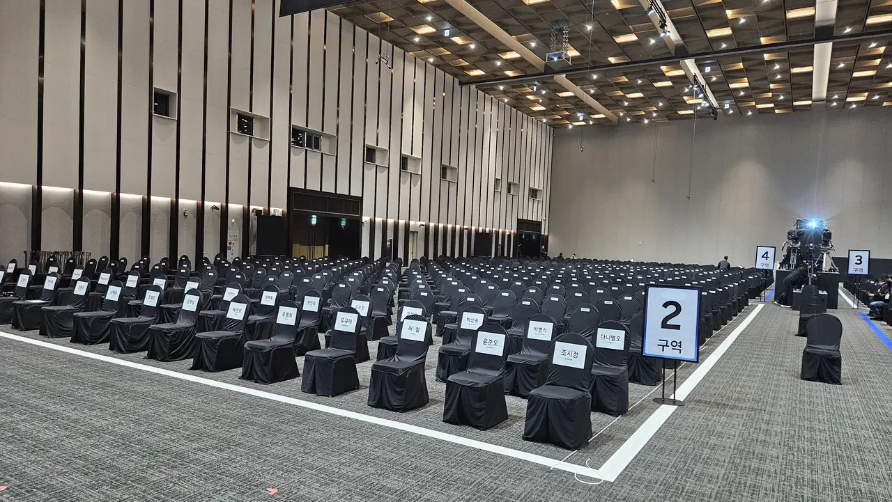
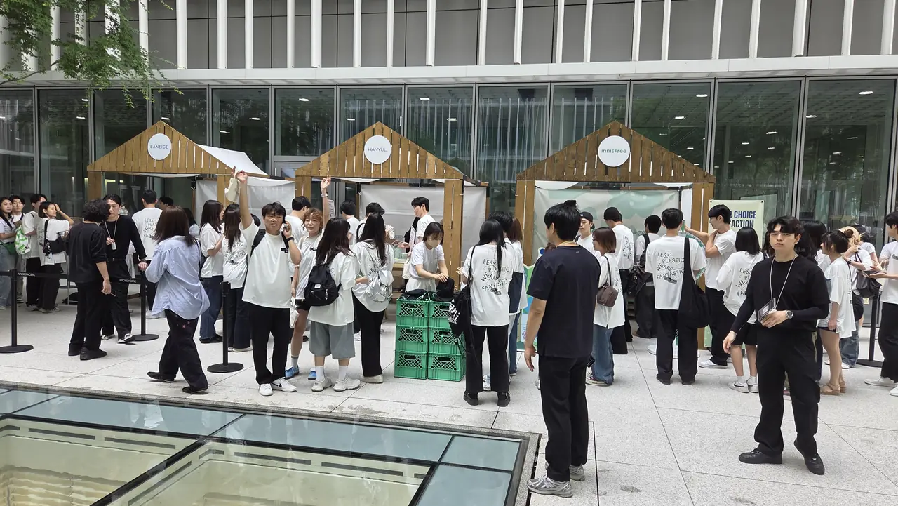
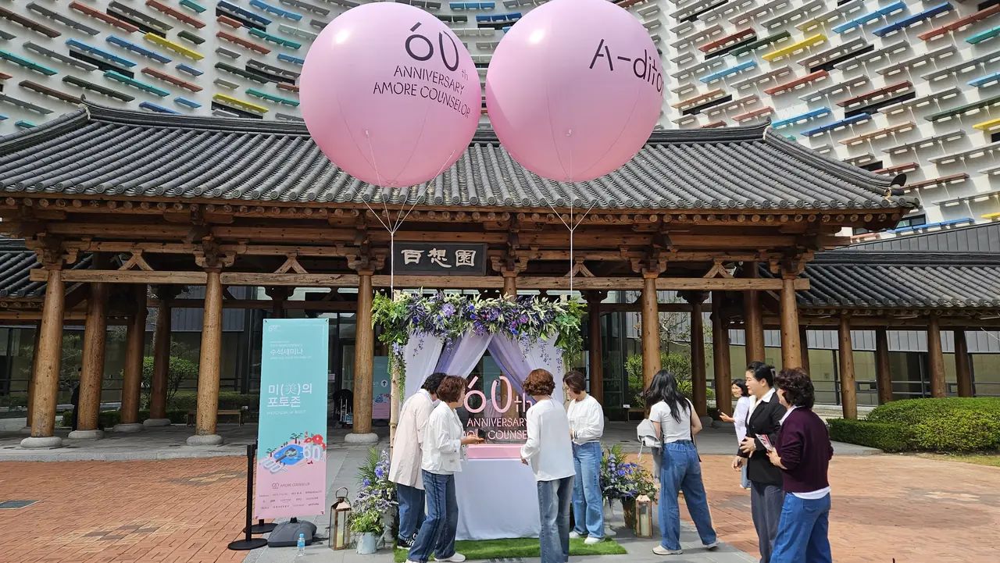

인력 구성 · 2026년 11월 17일
행사 진행요원 인원을 정할 때 확인할 것 7가지
행사 진행요원 인원은 「참석자 몇 명이면 몇 명」 같은 공식으로 정하지 않습니다. 어떤 역할이, 어느 위치에, 몇 시간 동안 필요한지를 먼저 적고, 그 합계에서 교대와 여유를 더해 정합니다. 이 글은 인력 에이전시에 요청하기 전에 담당자가 확인할 7가지 판단 항목을 질문 목록으로 정리했습니다.

- 인원은 숫자가 아니라 역할 × 위치 × 시간으로 정한다
- 행사장 구조, 동선, 입장 방식이 인원을 가장 크게 바꾼다
- 교대와 휴식, 여유 인력을 처음부터 계산에 넣는다
- 요청할 때는 숫자보다 행사 정보와 역할 목록을 준다
인원은 먼저 역할을 적고 나서 정합니다
인력 규모를 묻는 전화를 받으면 에이전시가 가장 먼저 되묻는 것은 숫자가 아니라 행사의 성격입니다. 같은 규모의 행사라도 입장 확인이 필요한지, 좌석이 지정되어 있는지, 행사장이 한 층인지 여러 층인지에 따라 필요한 진행요원은 크게 달라지기 때문입니다.
그래서 인원을 정하는 순서는 이렇습니다. 먼저 역할 목록(접수, 입장 안내, 좌석 안내, 무대 보조, 대기줄 관리 등)을 적고, 역할마다 서야 할 위치와 시간을 붙입니다. 그 표를 위에서부터 합치면 필요한 인원이 나옵니다. 숫자를 먼저 정하고 역할을 끼워 맞추면 빈 자리가 생기기 쉽습니다.

먼저 정리할 행사 정보
요청서를 쓰기 전에 아래 항목만 정리해도 상담이 훨씬 빨라집니다. 모두 숫자를 몰라도 적을 수 있는 항목입니다.
- 행사 종류와 목적(주주총회, 신제품 발표회, 박람회, 팝업스토어, 야외 행사 등)
- 행사 장소의 구조(층수, 입구 개수, 주차장과 행사장 사이 거리)
- 행사 일정(준비 시간, 본 행사 시간, 철수 시간)
- 참석자 성격(일반 방문객, 초청 인사, 주주, 외국인 등)
- 입장 방식(사전 등록, 현장 접수, 자유 입장)
행사 진행요원 인원을 바꾸는 7가지 판단 항목
아래 표는 인원을 늘리거나 줄이는 방향을 판단하는 질문입니다. 숫자는 일부러 넣지 않았습니다. 행사마다 답이 다르기 때문입니다.
| 판단 항목 | 확인할 질문 | 인원에 미치는 영향 |
|---|---|---|
| 입장 방식 | 사전 등록인가, 현장 접수인가. 명단 확인이 필요한가 | 현장 접수와 명단 확인이 있으면 접수 쪽 인력이 늘어납니다 |
| 행사장 구조 | 입구가 몇 곳인가. 층이나 구역이 나뉘는가 | 입구와 구역이 많을수록 안내 위치가 늘어납니다 |
| 동선 길이 | 입구에서 본 행사장까지 얼마나 걷는가 | 길수록 중간 안내 지점이 필요합니다 |
| 혼잡 시간대 | 특정 시간에 입장이나 퇴장이 몰리는가 | 몰리는 시간에만 일시적으로 늘리는 방식을 검토합니다 |
| 참석자 성격 | 초청 인사, 외국인, 노약자가 있는가 | 의전이나 통역처럼 전담 역할이 필요할 수 있습니다 |
| 행사 길이 | 준비부터 철수까지 총 몇 시간인가 | 길수록 교대와 휴식 인력이 필요합니다 |
| 야외 여부 | 날씨와 소음, 안전 변수가 있는가 | 야외일수록 안전 관리와 여유 인력이 필요합니다 |
역할을 나눈 뒤 위치에 놓는 순서
- 행사장 도면에 입구, 접수대, 무대, 화장실, 비상구를 표시합니다.
- 참석자가 지나가는 길을 화살표로 그립니다.
- 길이 꺾이거나 갈라지는 지점, 줄이 생기는 지점에 표시를 합니다.
- 표시한 지점마다 필요한 역할(안내, 접수, 줄 관리, 응대)을 적습니다.
- 지점별 역할이 필요한 시간대를 적고 합산합니다.
이 방식의 장점은 빠진 자리가 눈에 보인다는 점입니다. 화장실 앞이나 주차장 출구처럼 쉽게 놓치는 곳도 도면 위에서는 바로 드러납니다.

교대와 휴식, 여유 인력을 계산에 넣습니다
진행요원은 서 있는 시간이 깁니다. 행사가 길면 식사와 휴식 시간이 필요하고, 그 사이에도 자리는 비면 안 됩니다. 그래서 위치별 인원을 정한 뒤 교대할 사람을 따로 더해야 합니다. 이 부분을 빼고 계산하면 행사 중반에 빈 자리가 생깁니다.
여유 인력도 같은 이유로 필요합니다. 갑자기 줄이 길어지거나, 인사 한 분이 예정보다 일찍 도착하거나, 특정 구역에 문의가 몰리는 일은 행사에서 흔합니다. 한두 자리를 유동 배치로 비워 두면 현장 책임자가 필요한 곳으로 바로 보낼 수 있습니다.
에이전시에 요청할 때 줄 자료
지노컴퍼니는 요청을 받으면 행사 규모와 성격, 필요한 인력 정보를 먼저 듣고 담당 매니저가 요구사항을 파악한 뒤 인력 운영 계획과 견적을 제안합니다. 자세한 절차는 이용 안내에서 볼 수 있습니다.
- 행사 개요서나 큐시트 초안(시간대별 흐름이 보이는 것)
- 행사장 도면이나 사진(입구와 동선이 보이는 것)
- 필요하다고 생각하는 역할 목록(몰라도 괜찮습니다)
- 꼭 지켜야 하는 조건(복장, 안내 문구, 금지 사항)
인력 유형은 인력 서비스에 정리되어 있습니다. 역할을 몰라도 행사 정보만 주시면 구성은 함께 정리할 수 있습니다. 견적 요청은 견적 문의에서 받습니다.
자주 묻는 질문
참석자 수를 모르면 인원을 못 정하나요?
정할 수 있습니다. 참석자 수는 참고 정보일 뿐이고, 입구 구조와 입장 방식, 동선이 인원을 더 크게 좌우합니다. 대략의 규모와 행사장 정보만 주셔도 역할 목록부터 함께 정리합니다.
행사 당일 인원을 늘려야 하면 어떻게 하나요?
미리 정한 계약 방식에 따라 다릅니다. 갑작스러운 인력 수요는 긴급 지원 방식으로 대응하는 경우가 있으니, 가능한 범위는 상담 때 확인해 두는 편이 안전합니다.
견적에서 인원이 줄거나 늘 수 있나요?
행사 정보가 바뀌면 인력 운영 계획도 바뀝니다. 그래서 행사 전 최종 점검 미팅에서 마지막으로 한 번 더 확인합니다. 금액은 상담 후 견적으로 안내합니다.